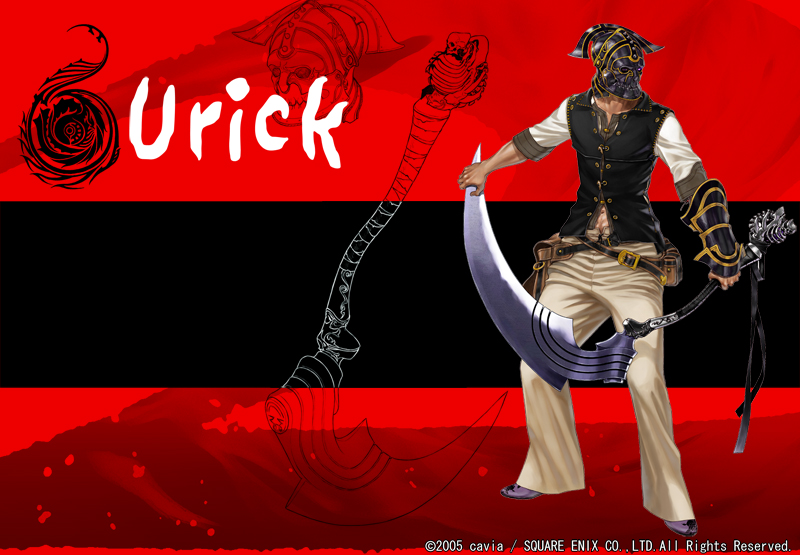

Urick
Sex Male Age 27 Height 189cm （cast.小山 力也）
死の呪縛に囚われながら生きる仮面の男。ノウェと出会うことにより、自分の使命、運命と向き合うことになる。
過去、封印騎士団に所属し、封印騎士団長オローの１番弟子として名を馳せた男。剣の腕もさることながら、生来の要領の良さをいかし、派閥をもたないオローを影に日向にとサポートした。幼いノウェやエリスとも顔をあわせているが、優秀な戦力ゆえ出征期間が長く、あまり密な交流はなかった。
一見明るく、適当で、悩みなんてないように見える。話の半分以上が冗談めかした言葉で形成され、めったに本音が見えない。ノウェやマナ、エリスを気遣う兄貴肌な一面もあり、要領よくいざこざを収拾してくれる頼りがいも垣間見せる。
しかし、三年前のある事件をきっかけに、死神と契約者し死よりも重い呪縛を背負っていた。そのことにより、死を人一倍恐れているにも関わらず、何度も死の恐怖を経験しその重荷が影となって彼にはりつき、苦しめる。
身体と心に傷を負い、罪を背負ったユーリックは逃げるように仮面を被り彷徨う日々。今日も仮面“ペルソナ”は心の奥の傷を隠すかのように不気味に光る。呪縛より解放される日は来るのだろうか。